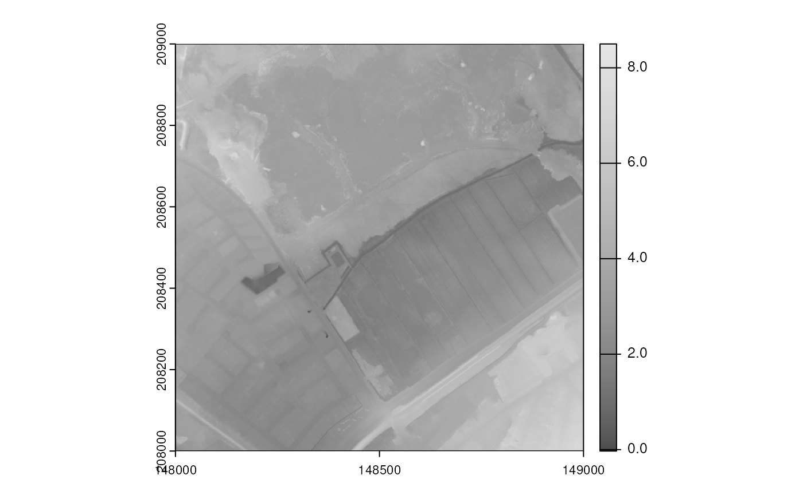

Dissecting a WCS Query: DHMV Case Study.
Falk Mielke (falk.mielke@inbo.be)
Source:vignettes/spatial_dhmv_query.Rmd
spatial_dhmv_query.RmdDHMV Data
Flemish government agencies host a lot of useful web services and data. Some of those are available via web services and can be found here:
This vignette demonstrates the query of elevation data from
the Digital Elevation Model,
Digitaal HoogteModel Vlaanderen (DHMV). We will do it “the
complicated way”, assembling a Web Coverage Service (WCS) query. In the end, you will see how to use
inbospatial to get the same result in a single function
call.
This vignette is somewhat related to, but goes beyond the use of Web
Feature Services (WFS) for spatial data, see
this tutorial by Thierry Onkelinx. In particular, I will document
some paths and workarounds to explore if errors occur in the default
ows4R procedure.
TL;DR: see the
?inbospatial:get_coverage_wcs function to query DHMV (or
other WCS) data of a given point in Flanders. An example can be found
below.
Situation/Motivation
The purpose of the code below is to query elevation data for an arbitrary location in Flanders. It can be found here:
Unfortunately, documentation about the WCS is sparse, so let’s hope it complies with given standards.
We will use Web Coverage Services (WCS), as standardized by the Open
Geospatial Consortium (OGC). More info on these services can be found in the
“Geocomputation with R” book, for example. The go-to R package for
WCS is ows4R by Emmanuel Blondel and contributors, available on github.
Unfortunately, neither the geocomputation book’s example, nor the
vignette in the
ows4R package, nor the
INBO tutorial could be transferred to the DHMV use case. The code
simply did not work.
Therefore, I ended up going back to the nitty-gritty aspects of WCS by manually building a query.
Limits of ows4R Package
Before revealing the solution, I will document the error and my path to working around it: the core problem was not trivial to see, and you might run into similar issues.
Because, in fact, the ows4R package seems functional. In
the tutorial mentioned above, the ows4R
package is used to query data from web services. However,
ows4R cannot handle all niche server interfaces.
First, we need to load some packages.
library("httr")
library("sf")
#> Linking to GEOS 3.12.1, GDAL 3.8.4, PROJ 9.4.0; sf_use_s2() is TRUE
library("terra")
#> terra 1.7.83
if (!requireNamespace("ows4R", quietly = TRUE)) {
install.packages("ows4R")
}
#> Loading ISO 19139 XML schemas...
#> Loading ISO 19115 codelists...
library("ows4R")We can connect a WCS client.
wcs <- WCSClient$new(
"https://geo.api.vlaanderen.be/DHMV/wcs", "2.0.1",
logger = "INFO"
)
#> [ows4R][INFO] OWSGetCapabilities - Fetching https://geo.api.vlaanderen.be/DHMV/wcs?service=WCS&version=2.0.1&request=GetCapabilities
#> | | | 0% | |======================================================================| 100%We can easily query the capabilities:
caps <- wcs$getCapabilities()This would grab the same info as you can find in this xml file: https://geo.api.vlaanderen.be/DHMV/wcs?service=WCS&request=getcapabilities
Note that the capabilities xml holds a lot of valuable information:
- First and foremost, search it for
CoverageID; in this case, I was interested inDHMVII_DTM_1m: grid coverage of the LIDAR elevation data for Flanders. - We can also find that the Coordinate Reference System (CRS)
crsSupportedis BD72 / Belgian Lambert 72. Always good to know. - Finally, the capabilities xml provides a
version: 2.0.1 at the time of writing. Yet keep that in mind for a bit.
The “capabilities” are, per OGC standards, your go-to place for finding WCS documentation.
In R, we can receive further information conveniently via
ows4R. This works via the “coverage summary” …
feature <- "DHMVII_DTM_1m"
dtm_smry <- caps$findCoverageSummaryById(feature, exact = TRUE)
dtm_smry
#> <WCSCoverageSummary>
#> ....|-- CoverageId: DHMVII_DTM_1m
#> ....|-- CoverageSubtype: GridCoverage
#> ....|-- WGS84BoundingBox <OWSWGS84BoundingBox>
#> ........|-- LowerCorner: 2.52 50.64
#> ........|-- UpperCorner: 5.94 51.51… and the coverage description.
# Get description from the WCS client
dtm_des <- wcs$describeCoverage(feature)
#> [ows4R][INFO] WCSClient - Fetching coverageSummary description for 'DHMVII_DTM_1m' ...
#> [ows4R][INFO] WCSDescribeCoverage - Fetching https://geo.api.vlaanderen.be/DHMV/wcs?service=WCS&version=2.0.1&coverageId=DHMVII_DTM_1m&request=DescribeCoverage
#> | | | 0% | |======================================================================| 100%
dtm_des
#> <WCSCoverageDescription>
#> ....|-- boundedBy [srsName=http://www.opengis.net/def/crs/EPSG/0/31370,axisLabels=x y,uomLabels=Meter Meter,srsDimension=2] <GMLEnvelope>
#> ........|-- lowerCorner: 17000 148000
#> ........|-- upperCorner: 264000 250000
#> ....|-- domainSet [gml:id=grid_DHMVII_DTM_1m,dimension=2] <GMLRectifiedGrid>
#> ........|-- limits <GMLGridEnvelope>
#> ............|-- low: 0 0
#> ............|-- high: 246999 101999
#> ........|-- axisLabels
#> ............|-- value: x y
#> ........|-- origin [gml:id=grid_origin_DHMVII_DTM_1m,srsName=http://www.opengis.net/def/crs/EPSG/0/31370] <GMLPoint>
#> ............|-- pos: 17000.5 249999.5
#> ........|-- offsetVector [srsName=EPSG:31370,srsDimension=2]
#> ............|-- value: 1 0
#> ........|-- offsetVector [srsName=EPSG:31370,srsDimension=2]
#> ............|-- value: 0 -1
#> ....|-- rangeType <SWEDataRecord>
#> ........|-- field <SWEQuantity>
#> ............|-- description
#> ................|-- value: Band 1
#> ............|-- nilValues <SWENilValues>
#> ................|-- nilValue [reason=http://www.opengis.net/def/nil/OGC/0/inapplicable]
#> ....................|-- value: -9999
#> ............|-- uom [code=unknown]
#> ............|-- constraint
#> ................|-- AllowedValues
#> ....................|-- interval
#> ........................|-- value: -99.890144 354.144226
#> ....|-- CoverageId
#> ........|-- value: DHMVII_DTM_1m
#> ....|-- ServiceParameters <ISOElementSequence>
#> ........|-- CoverageSubtype: RectifiedGridCoverage
#> ........|-- nativeFormat: image/tiffFinally, it is important to know which dimensions are available:
LON/LAT, x/y, or maybe time?
dtm_dims <- dtm_smry$getDimensions()
#> [ows4R][INFO] WCSCoverageSummary - Fetching Coverage envelope dimensions by CRS interpretation
#> No encoding supplied: defaulting to UTF-8.
dtm_dims
#> [[1]]
#> [[1]]$label
#> [1] "x"
#>
#> [[1]]$uom
#> [1] "Meter"
#>
#> [[1]]$type
#> [1] "geographic"
#>
#>
#> [[2]]
#> [[2]]$label
#> [1] "y"
#>
#> [[2]]$uom
#> [1] "Meter"
#>
#> [[2]]$type
#> [1] "geographic"So far, so good.
Now, following the tutorials to get some real data:
x_test <- 148600
y_test <- 208900
range_m <- 2 # (+/- m)
hopo_boxed <- OWSUtils$toBBOX(
xmin = x_test - range_m,
xmax = x_test + range_m,
ymin = y_test - range_m,
ymax = y_test + range_m
)I will write the file to disk:
mht_file <- tempfile(fileext = ".mht")
tryCatch({
dtm_data <- dtm_smry$getCoverage(
bbox = hopo_boxed,
filename = mht_file
)
}, error = function(err) message(err)
)
#> [ows4R][WARN] WCSCoverageSummary - Coverage without temporal dimension: 'time' argument is ignored
#> [ows4R][WARN] WCSCoverageSummary - Coverage without vertical dimension: 'elevation' argument is ignored
#> <GMLEnvelope>
#> ....|-- lowerCorner: 148598 208898
#> ....|-- upperCorner: 148602 208902[ows4R][INFO] WCSGetCoverage - Fetching https://geo.api.vlaanderen.be/DHMV/wcs?service=WCS&version=2.0.1&coverageId=DHMVII_DTM_1m&subset=x(148598,148602)&subset=y(208898,208902)&format=image/tiff&request=GetCoverage
#> | | | 0% | |======================================================================| 100%
#> Start tag expected, '<' not found
#> Warning in new_CppObject_xp(fields$.module, fields$.pointer, ...): GDAL Error
#> 4: `/tmp/RtmpNYlaDW/file1f753c7866af.mht' not recognized as a supported file
#> format.
#> Error: [rast] cannot open this file as a SpatRaster: /tmp/RtmpNYlaDW/file1f753c7866af.mht… or, maybe not. The function fails, somehow.
Status quo:
- I receive a file (an “mht” because I called it “mht”),
supposedly some kind of GeoTIFF image (because I asked for
image/tiff), yet wrapped into other data chunks. - I also receive a couple of error messages and warnings:
- “Start tag expected, ‘<’ not found”
- “cannot open this file as SpatRaster:…”
- The raw file is “not recognized as being in a supported file format. (GDAL error 4)”
Maybe most useful, ows4R briefly displays the URL it
used to attempt data query:
https://geo.api.vlaanderen.be/DHMV/wcs?service=WCS&version=2.0.1&coverageId=DHMVII_DTM_1m&subset=x(148599,148601)&subset=y(208899,208901)&format=image/tiff&request=GetCoverage
Let’s break this URL down:
- the desired
serviceis indeedWCS, -
versionis2.0.1(I would guess) -
request,coverageID, andformatseem to be as expected - there are
subsetcomponents for the respective dimensions.
Feel free to try yourself to paste the URL to a browser and download the file.
Still, the downloaded file is unreadable. Subtle symptom: even if one
adjusts the subset (i.e. bbox argument,
above), the received tif does not change in size; the download is
bbox-agnostic, so to speak.
Opening the file with a text editor such as vim, we see an XML part, some generic binary stuff, some hints that this should be a GML.
There are sample geoTIFFs online, and they look different, or maybe not. GML is clearly not geoTIFF, except maybe for the binary part (which I tried to extract, to no avail).
The file does not download with an extension on the author’s OS and browser. On a different OS, the browser automatically extended it with “.mht”. In fact, it is an MHT file. More on that below.
The Lead: QGIS
Well, there is advanced software to open GeoTIFF’esque files. Or geography markup. At least some software might be able to identify what we actually have here.
First, if R failed, Python might work.
import rasterio
import rasterio.plot
data_name = "/tmp/test_hopo.tif"
tiff = rasterio.open(data_name)
rasterio.plot.show(tiff, title = "will this work? no!")… but it doesn’t recognize the file type as raster data.
How about QGIS? “Spatial Without Compromise”, they advertise. Unfortunately, that program also was unable to open the file downloaded in R.
However, QGIS can actually connect to WCS directly. This does not help much if you need the data in R. Yet, why not.
Look and behold: QGIS can actually connect to
<https://geo.api.vlaanderen.be/DHMV/wcs> and query
elevation data for Flanders; good indication that the WCS is, somehow,
functional. I could zoom and move, export images. I could even export
the data. I stopped exporting the data when it threatened to entirely
fill my tiny system partition (the raster data is more than 100GB) -
good confirmation that we want web services for this.
And, luckily, at some careless map movement, I received an error output from QGIS. With it, QGIS gave me a working URL to query DHMV:
https://geo.api.vlaanderen.be/DHMV/wcs?SERVICE=WCS&VERSION=1.0.0&REQUEST=GetCoverage&FORMAT=GeoTIFF&COVERAGE=DHMVII_DTM_1m&BBOX=162064,165735,170953,168882&CRS=EPSG:31370&RESPONSE_CRS=EPSG:31370&WIDTH=1622&HEIGHT=574

Let’s dissect this URL.
The Solution: Query Building
If you start at the question mark of the URL, and split at every ampersand, you can extract the following components from the (correct) QGIS URL:
| correct: | |
|---|---|
| SERVICE | WCS |
| VERSION | 1.0.0 |
| REQUEST | GetCoverage |
| FORMAT | GeoTIFF |
| COVERAGE | DHMVII_DTM_1m |
| BBOX | 162064,165735,170953,168882 |
| CRS | EPSG:31370 |
| RESPONSE_CRS | EPSG:31370 |
| WIDTH | 1622 |
| HEIGHT | 574 |
Compare this to the (unsuccessful) ows4R attempt:
| non-functional: | |
|---|---|
| service | WCS |
| version | 2.0.1 |
| coverageId | DHMVII_DTM_1m |
| subset | x(148599,148601) |
| subset | y(208899,208901) |
| format | image/tiff |
| request | GetCoverage |
You can selectively shuffle and adjust components, generalizing the working query and learning about the WCS interface. Which feels a bit like fuzzing the WCS.
Here is what I found:
-
service(WCS) andrequest(DHMVII_DTM_1m) were correct; the latter could be swapped for different datasets -
coverageis the correct keyword for readingDHMVII_DTM_1m -
versionmust be1.0.0; it currently does not work with 2.0.1 - instead of subsetting, we can use a
bbox… - … but a
widthandheightof the output image are mandatory; alternatively there areresxandresy(not shown) - we must specify a
CRS(EPSG:31370), optionally also aresponse_crs - the
formatisGeoTIFF; slashes are weird in URLs anyway
After some more trial and error, I could construct working URLs in R and generalize this to a function.
get_elevation_wcs <- function(x, y, range_m = 1, tiff_file = NULL) {
# Please note that this function lacks a lot of
# assertions and documentation.
# get bbox
bbox <- paste(x - range_m, x + range_m,
y - range_m, y + range_m,
sep = ",")
# the URL components
base_url <- "https://geo.api.vlaanderen.be"
endpoint <- "/DHMV/wcs" # nolint: absolute_path_linter
# the query parameters which worked in QGIS
elevation_query <- list(
service = "WCS",
version = "1.0.0",
request = "GetCoverage",
format = "GeoTIFF",
coverage = "DHMVII_DTM_1m",
bbox = bbox,
width = 2 * range_m,
height = 2 * range_m,
crs = "EPSG:31370"
)
# get wcs data
if (is.null(tiff_file)) {
tiff_file <- tempfile(fileext = ".tiff")
}
GET(url = modify_url(base_url, path = endpoint),
query = elevation_query,
write_disk(tiff_file))
# note: saving this to a file is optional,
# but might prevent double download or loss of data
# re-read raster file
data <- rast(tiff_file)
return(data)
}Example usage:
x_test <- 148600
y_test <- 208900
range_m <- 10 # (+/- m)
test_raster <- get_elevation_wcs(x_test, y_test, range_m = range_m)
# we can extract a value at a point:
extract(test_raster, cbind(x_test, y_test))[[1]]
#> [1] 9.899891Voilà! We can now get the elevation of a given location in Flanders via DHMV web services.
Major grain of salt: we could not use the latest version,
v2.0.1, of the DHMV WCS. This is not a minor limitation,
and should be taken seriously: old versions become obsolete, break, or
stop data updates.
Using Version 2.0.1
Apparently, the exact symptoms of the failing query above are
somewhat depending on your browser and operating system. Your browser
might detect that the file is an mht, or not.
Here is an example of how to build a query with the current version of DHMV:
url <- parse_url("https://geo.api.vlaanderen.be/DHMV/wcs")
# the query parameters which worked in QGIS
url$query <- list(
SERVICE = "WCS",
VERSION = "2.0.1",
REQUEST = "GetCoverage",
FORMAT = "image/tiff",
COVERAGEID = "DHMVII_DTM_1m",
SUBSET = "x,http://www.opengis.net/def/crs/EPSG/0/EPSG:31370(148000,149000)",
SUBSET = "y,http://www.opengis.net/def/crs/EPSG/0/EPSG:31370(208000,209000)",
SCALEFACTOR = "1",
CRS = "EPSG:31370",
RESPONSE_CRS = "EPSG:31370"
)
request <- build_url(url)
# get wcs data
mht_file <- tempfile(fileext = ".mht")
print(request)
#> [1] "https://geo.api.vlaanderen.be/DHMV/wcs?SERVICE=WCS&VERSION=2.0.1&REQUEST=GetCoverage&FORMAT=image%2Ftiff&COVERAGEID=DHMVII_DTM_1m&SUBSET=x%2Chttp%3A%2F%2Fwww.opengis.net%2Fdef%2Fcrs%2FEPSG%2F0%2FEPSG%3A31370%28148000%2C149000%29&SUBSET=y%2Chttp%3A%2F%2Fwww.opengis.net%2Fdef%2Fcrs%2FEPSG%2F0%2FEPSG%3A31370%28208000%2C209000%29&SCALEFACTOR=1&CRS=EPSG%3A31370&RESPONSE_CRS=EPSG%3A31370"
print(mht_file)
#> [1] "/tmp/RtmpNYlaDW/file1f751102f7a8.mht"
response <- GET(url = request,
write_disk(mht_file))With the mht specifications found online, it is
possible to create an unpacking function, which has become part of this
very package.
library("readr")
library("stringr")
unpack_mht <- function(mht_filepath) {
lines_raw <- read_lines_raw(mht_filepath)
lines_char <- suppressWarnings(read_lines(mht_filepath))
raw_vector <- read_file_raw(mht_filepath)
start <- which(str_detect(lines_char, "^II\\*"))
end <- length(lines_raw) - 1
pos_start <- length(unlist(lines_raw[1:(start - 1)])) + start
pos_end <- length(raw_vector) - (length(lines_raw[end + 1]) + 1)
tif <- raw_vector[pos_start:pos_end]
tif_path <- str_replace(mht_filepath, "mht", "tif")
write_file(
tif,
tif_path
)
return(tif_path)
}This way you get the elevation data extracted:
tif_file <- unpack_mht(mht_file)
raster <- rast(tif_file)
plot(raster, col = gray.colors(256))
The “inbospatial” Way
Colleague Hans Van
Calster had been facing the same problems with related WCS layers a
year earlier, and he wrote a function for it in the `inbospatial`
package. We now refined the get_coverage_wcs()
procedure to solve the mht issue.
Here is how to use it, for the same case as above:
bbox <- sf::st_bbox(
c(xmin = 148000, xmax = 149000, ymin = 208000, ymax = 209000),
crs = sf::st_crs(31370)
)
hopo_raster <- inbospatial::get_coverage_wcs(
wcs = "dhmv",
bbox = bbox,
layername = "DHMVII_DTM_1m",
version = "2.0.1",
wcs_crs = "EPSG:31370",
resolution = 1
)
plot(hopo_raster, col = gray.colors(256))The function gives you quite some options of WCS layers to query data from.
| WCS | layer name | reference |
|---|---|---|
| dtm | EL.GridCoverage.DTM |
here |
| dsm | EL.GridCoverage.DSM |
here |
| dhmv | DHMVI_DTM_5m |
here |
| dhmv | DHMVII_DTM_1m |
here |
| dhmv | DHMVII_DSM_1m |
here |
At a quick glance, we found that the dtm WCS seems to
include canopy points, which is not according to definition; see here:
https://www.neonscience.org/resources/learning-hub/tutorials/chm-dsm-dtm
A general advice is to confirm your data for a region you know.
In addition, there are oi-omz and oi-omw
for “zummer” and winter ortho-mosaic images.
The burden of choice!
Post Mortem
The value of this vignette seems to be limited: in essence, it
provides the specific query function arguments for elevation model
queries with the geo.api WCS of the Flemish digital
services. Quite a niche use case.
However, this is also a story of tracing errors in existing tools, and scraping other tools for hints.
Can we actually trace the error back to a source? It was pure co-incidence that QGIS provided a working link, or are there general strategies? As colleague @florisvdh pointed out, QGIS generally has good heuristics to infer a web service URL, and choose parameter values which work. Once a web service layer is successfully loaded in QGIS, one can inspect URLs and metadata in the layer properties. The QGIS dialogue to add a web service layer is also helpful in exploring available layers of a web service.
In retrospective, the initial issue was worsened by unfavourable circumstances.
-
ows4Rretrieved a file and produced an error; another error was only thrown downstream. Neitherows4R, norterra,sf,rasterio, orqgiswere able to handlemhtfiles. This lack of support questions the WCS design choice of packing and sending anmht. - Documentation for the
geo.api.vlaanderen.beWCS is lacking (or I did not find it); in particularly I missed usage examples, vignettes, or tests.
The colleagues at Digitaal Vlaanderen or the DHMV group
certainly had enough work on their table, yet more documentation would
be desirable. Same for ows4R, judging by their github issue list
(see e.g. this
one). On the other hand, QGIS is free- and open
source, its queries seem to be well maintained and are accessible,
errors are transparent, I could have read the source code - a good
example piece of software.
Yet in general, if you run into issues like this, do not hesitate to contact support or file a github issue. You should not need to fuzz a WCS.
Thank you for reading, and may all your spatial queries be successful!